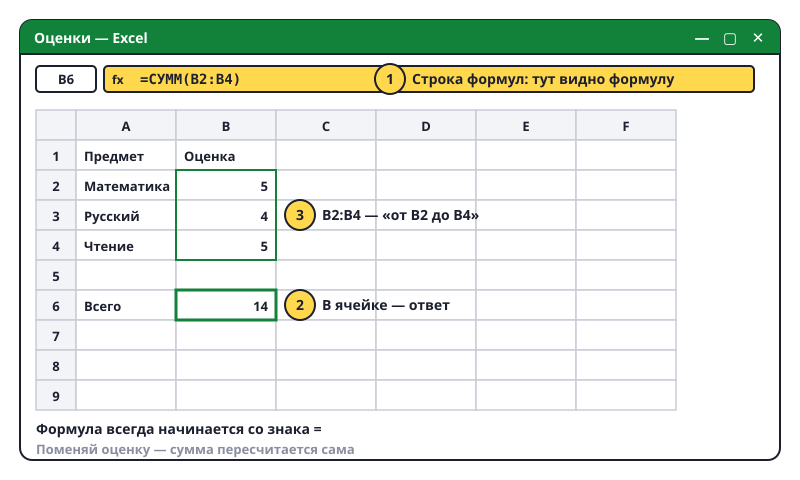

Формулы: таблица считает сама
Вот ради чего нужен Excel. Ты пишешь, что посчитать, — а он считает. И пересчитывает, если ты что-то поменял.

Первая формула
- Открой «Оценки» (или новую книгу). Кликни пустую ячейку, например B6.
- Любая формула начинается со знака =. Напиши:
=2+3и нажми Enter. В ячейке появилось 5. - Кликни B6 снова: в ячейке — 5, а вверху в строке формул —
=2+3. Excel показывает ответ, а помнит формулу. - Знаки: + плюс, - минус, * умножить (звёздочка), / разделить (косая черта).
Формула с ячейками
- Самое интересное: в формулу можно вставлять адреса ячеек. В B6 напиши
=B2+B3+B4→ сумма оценок. - Теперь поменяй оценку в B2. Смотри на B6 — сумма пересчиталась сама!
- Сумма многих ячеек:
=СУММ(B2:B4). Двоеточие значит «от B2 до B4». Или кликни ячейку под числами и нажми кнопку Σ (Автосумма) на вкладке «Главная» справа. - Среднее:
=СРЗНАЧ(B2:B4)— средняя оценка. - Самое большое / маленькое:
=МАКС(B2:B4)и=МИН(B2:B4).
Автозаполнение
- Напиши в A10 — 1, в A11 — 2. Выдели обе ячейки.
- В правом нижнем углу выделения — маленький квадратик. Потяни его вниз. Excel продолжит: 3, 4, 5…
- Так же работает с днями недели: напиши «Понедельник» и тяни.
Попробуй сам: в таблице «Мои игры» под часами напиши формулу суммы — сколько всего часов в неделю. Рядом — среднее. Посчитай, сколько это часов за месяц (умножь сумму на 4).
Если вместо ответа видишь #ИМЯ? — ошибка в названии функции. ##### — просто столбец узкий, растяни его.